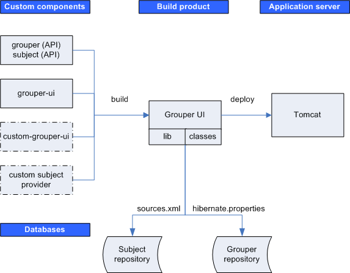

grouper
The Grouper API distribution includes the binary files for the Subject API implementation which includes a JDBC provider
grouper-ui
Source code for the Grouper UI is maintained as a separate module in the Internet2 Middleware CVS repository.
custom-grouper-ui (optional)
Sites implementing Grouper will generally want to re-brand (and perhaps heavily customise) the native Grouper UI (see Customising the Grouper UI).
custom subject provider (optional)
Depending on the identity management / person repository(s) in use, a site may also need to implement a custom Subject provider.
The Grouper UI build script compiles and combines the custom components in order to create a single web application build product. This step is responsible for ensuring that all required libraries (JAR files) and configuration files are available on the web application class path i.e. in the lib or classes directories.
Once built, the web application is then deployed to an application server. Currently, only Tomcat has been tested.
The Grouper UI does not require any container specific configuration to work.
Grouper requires a relational database. The default is HSQLDB, however, in principle, any database for which there is a JDBC driver and which is supported by Hibernate can be used.
The Subject API can be configured to work with multiple sources (through sources.xml). A JDBC provider is provided with the Subject API distribution (an LDAP provider will be made available in the future), however, sites can implement their own providers.
Each time the Grouper UI is built, the sources.xml and hibernate.properties file are copied from grouper/conf to the web application classes directory. Database components can, through these files, be configured to be on the same machine or separate machines.
The default QuickStart configuration uses the same HSQLDB database as a Grouper repository and as a source for the JDBC provider - the only source configured. In addition, Tomcat and the HSQLDB database run on the same machine.